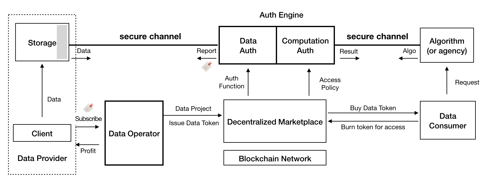

Auth3 Whitepaper
April 21. 2021
PLEASE NOTE: This is an unfinished version and there will be further changes in both technical design and economic model.
- Auth3 Whitepaper
- 1. Introduction
- 2. Background & Motivation
- 3. High-level architecture
- 4. Building Blocks
- 5. Token economics
1. Introduction
2. Background & Motivation
Web 3.0 has been recogonized as the next station of the Web. It is still being built and there is no established definition of what Web 3.0 is yet. When we are talking about Web 3.0, we are depicting an open, permissionless world with full-decentralization, privacy-preserving and freely value exchange. To truly understand what Web 3.0 can bring to us, we need to figure out what we are facing in the current network.
Challenges
From Web 1.0 to Web 2.0, centralized intermediaries brought us efficient, intensive and full-featured platforms and services to coordinate, interact and trade with other counterparties. People get used to this and enjoy the convenience. However, everything comes at a price. We get more dependent on these powerful intermediaries and would like to provide our personal data and information freely. As the owner of these data, we become the property of those companies and organizations. Our data makes great profits, yet we get nothing but risk of privacy exposure and invasion.
Concretely, personal data intrinsically contains tremendous value, e.g., the user labels and portraits are essential support for industries including advertising, insurance, medical and artificial intelligence, which brings a $trillion-level marketplace. Due to lack of effective and legal ways for data usage, the value is dramatically constrained and distributed inequitably.
- User's multi-dimensional data is scattered across various Internet companies.
- The powerful companies force users to authorize and make money of these data.
- Users are completely unconscious of how the data is spreaded and used.
- There is no clear responsibilities for accidents such as users' data loss or leakage, which has actually happened frequently.
AUTH3 wants to make a change
According to Coase theorem[COASE1966], we know that when the transaction cost is zero or low enough, no matter who the original owner of the resource is, the resource will finally flow to the most valuable usage scenario. This explains why the huge amount of data is handled by a set of centralized entities, cuz they know how to explore the value of data efficiently. In another aspect, the data scattered across the Internet results in plenty of data silos, which notably impedes the exploitation of valuable data.
Given all above, the ultimate goal of AUTH3 is to unleash the value of data, help people discover, aggregate and equitably exchange their authentic data assets, connect people and data around the world. In AUTH3, you will 1) own your data, 2) control your data, 3) entitled to sell the right of your data usage without disclosure your privacy and get paid for that. To achieve this, we will replace the current excessive centralization by a truly decentralized, autonomous and privacy-preserved marketplace, where:
- Data sovereignty and the right for usage are decoupled completely.
- Data is monetized into Data Tokens, which can be circulated for transaction and consumption of the data assets, by leveraging the booming DeFi like AMM[1] DEX[2].
- People can launch a data project, mint data tokens, and appeal for data provision (aka data staking), or can join a data project, provide/stake data as required. They earn data tokens as rewards.
- Data must always be authorized by the owners, and the data is verified to be authentic and not tampered by using privacy computing technology like TEE, MPC and federated learning.
- Privacy computing technology is also utilized to guarantee that "data is usable but not visible", which means the data itself is not directly shared but rather the comuting value.
- Data always stays on-premise, with full compliance with the data protection regulations like GDPR, CCPA, Data Security Law of the People’s Republic of China, etc.
Values
AUTH3 is not only a network for the future, it's also
- A revolution for the fight for data sovereignty, the new paradigm of data circulation and transaction, and entirely release of data values.
- A community comprised of different people, enterprises and organizations, where every single one can coordinate and meet their data requirements, exchange data assets in an equitable and autonomous way.
- An ecosystem that sustainably spreads values and keeps long-term & healthy growing, via a community self-governed supervision and grant mechanism called Auth3 DAO.
[1] As known as "Automated Market Maker"
[2] As known as "Decentralized Exchange"
References
[COASE1966] "Coase theorem", Wikipedia. https://en.wikipedia.org/wiki/Coase_theorem
3. High-level architecture
3.1 Design Objectives
- An open data monetization platform. It aims to provide continuous and sufficient liquidity for data assets, and realize the release and continuous growth of data value.
- General private data processing scheme. It is not just the secure execution process, but also the authentication process of data quality under the premise of privacy protection.
- Transparent and secure data aggregation and operation mechanism. It decouples data control and data operation by introducing experts or building automatic operation tools to guide data providers to build truly valuable data sets and coordinate data supply and demand.
- Flexible and extensible marketplace. According to different data types and data scenarios, it should be allowed to create different market tools to provide users (e.g., data providers, data consumers, data operators...) with a simpler way to participate.
3.2 The Architecture
The high-level system design of Auth3 is shown in Figure 1, the kernel of Auth3 network consists of three modules:

-
As the initiator of data projects, Data Operator will carry out a series of work related to data set construction, operation and maintenance, including defining data standards, data auth functions and other operation strategies. In the mean time, as the issuer of data token, Data Operator will choose (or design by itself) an appropriate economic model to tokenize the data set that it operates, and coordinate various roles in the data market. The source data may not belong to Data Operator, but Data Operator will determine the operation strategy, revenue distribution rules and other rights of data. At the beginning of Auth3 project, we plan to encourage people or institutions with operation experience in various data fields to act as early data operators. In the future, the community can spontaneously set up automatic operation facilities to build data projects after various market tools become mature.
-
Auth Engine, as a reliable neutral party, will undertake two main responsibilities: data authentication and secure execution. Auth Engine runs in the environment protected by TEE (Trust Execution Environment) to ensure the privacy and integrity of internal execution process. On the one hand, the data authentication process will execute the auth function defined by Data Operator, accept the source data from the data provider through a secure channel, and return the authentication result to Data Operator as basis for data value evaluation. On the other hand, Auth Engine will provide a general secure computing environment that is used to execute the algorithm defined by the consumer ensuring that the data is used without disclosure.
-
Marketplace is the place for data value circulation where Data Operator can start data projects and issue data tokens, and data consumers can issue data requests and complete the secure computation of data. It will provide a series of market tools (such as token framework, transaction pools, board, etc.) to help Data Operator build a dynamic data market. Marketplace should be a sustainable system. All kinds of infrastructure of Auth3 will provide powerful help for it, and the revenue generated in Marketplace will be partly used to feedback these participants in turn.
The outside part in Figure 1 is the users of Auth3 network, including data provider, data consumer and liquidity provider. Data provider can be large institutions or just individuals, who will continue to gain benefits by providing verifiable valuable data. Data consumers can explore valuable data in various kinds of data markets and pay the corresponding data token to obtain the access rights of the data. This revenue will be mainly distributed to the data provider, and the other part will be used to feedback other contributors in the network. Liquidity provider will provide liquidity for all kinds of data tokens in the network by staking Auth3 token, and obtain liquidity reward.
4. Building Blocks
4.1 Overview

This section introduces the technical part of Auth3 protocol, whose overview is shown in the above figure. The key roles (or components) of Auth3 are:
-
Data Provider: To provide data in Auth3 protocol, data provider (also called DP) needs to run two components: user client and a storage. The previous one is provided by Auth3 protocol and is used to communicate with other components in Auth3 network (e.g., the Auth Engine). The later one is used to save the user data and this component is constructed by the DP. For example, it can be an application running on DP's machine or a third-party service which is rented by the DP. DP's data will only stored in the DP-controlled storage to enforce data privacy.
-
Data Operator: The role who helps multiple data providers to aggregate their data and publish them on Auth3 network. Data operator needs to validate the value of aggregated data and publish the data token. Auth3 protocol provides tools to perform these behaviors (details can be found in [Section 4.3](#4.3 Data Operator)).
-
Auth Engine: It is an important component in Auth3 network. During data assets publication, Auth Engine verified the ownership and value of the data. During data exchanging, it protects and verifies the exchange procedure. We will introduce details about Auth Engine in [Section 4.2](#4.2 Auth Engine).
-
Marketplace: It is a decentralized market for publishing, discovering and exchanging data assets. Marketplace is consist of multiple onchain smart contracts, which implements the service logics. Besides them, we will also provide several frontend window (e.g., applications or website) for different roles to interact with the market place.
-
Data Consumer and Algorithm: The role who pays for the data and consums the value of data. Auth3 protocol provides client for the consumer to burn the data token and use the data. In our protocol, consumer needs to leverage a data-usage algorithm to use the data, and get the result returned by the algorithm. The execution will be performed in Auth engine to enforce the data privcay.
The data-usage algorithm can be implemented by any developer or the consumer herself. Auth3DAO will audit the algorithm ([Section 4.5](#4.5 Auth3 DAO)) and data operator could deployed access policy to specify which algorithm can be used on her data project ([Section4.3](#4.3 Data Operator)).
4.2 Auth Engine
4.2.1 What is Auth Engine？
The main goal of Auth3 protocol is to aggregate data assets from different people and help peoples to exchange their data assets. During the data assets exchanging, a key problem is "How to provide the authentication for data assets ?". Once we try to transfer data to data asset, the intellectual property (IP), authenticity and quality need to be verified, specially for the personal data. In our protocol, Auth engine takes responsibility to perform the authentication.
To perform authentication in the whole lifecycle of data assets exchanging, Auth engine provides two kinds of functionalities:
-
Data Auth: Before we try to exchange something, we must confirm its ownership and the value. For the data asset, we should verified its ownership, as well as its authenticity and quality. Because of that, Auth engine will perform Data Auth, which verifies the data intellectual property (a.k.a. the data owner), the authenticity of data and the quality of the data. Auth engine will generate a data report for the verified data asset. Thereafter, anyone can evaluate the ownership and value of the data asset by verifying its data report.
-
Computation Auth: After the data asset has been authenticated, it can be exchanged. The exchanging procedure itself should be authenticated. Auth engine provides Computation Auth to protect the whole data exchanging procedure, from data feeding to result returning. In Auth3, data assets are exchanged by computation with data-usage algorithm. Becore the execution, Computation Auth will validate the exchanged data and the algorithm. During the execution, it enforces that the execution-flow cannot be tampered with, and the return value is generated from the exchanged data and algorithm. Finally, Computation Auth provides an execution report to proof these authentication. Data consumer can validate the computation by checking this report.
In the workflow of Auth engine, we need to enforce both the privacy and the trust. On one side, the data needs to be transferrred to Auth engine to perform the authentication and computation. The data privacy must be protected. On the other side, Auth engine must enforces that the reports provided by it is trusted. We uses Trusted Execution Environment (TEE) and cryptographic technology (e.g., secure multi-party computation (sMPC)) to enforce the data privacy and report trust. Details of how our protocol enforces the privacy and trust can be found in [Section 4.4](#4.4. Privacy&Trust, Everywhere).
4.2.2 Data Auth
As mentioned above, the main goal of data auth is to verify the ownership, authenticity and quality of the data asset, and to generate a report to proof the notarization. Verification on the ownership and authenticity could be a generic task. However, the quality of data highly depends on the type of the data and the application scenario. To perform notarization on data quality, Auth3 protocol provide Auth Function (AF) method.
In this subsection ,we will first introduce how to use Auth function to evaluate the quality of data asset. After that, we introduce how to verify the data ownership and the authenticity. Finally, we introduce how Auth engine generates the data report.
4.2.2.1 Auth Function
Why need Auth function?
Auth function is used to evaluate the quality of data, which is criticial in Auth3 protocol. Whenever a data provider try to add her data into a data project, she needs to provide the data quality evaluated by specified Auth function. Data operator only accepts the data which satisfies the quality requirement. After the data project is published, anyone can verify the data quality by checking the data quality filed in data report.
Where does Auth function come from?
For different data types and application scenarios, the data quality needs to be evaluated with different methods, which requires different auth functions. Because of that, Auth3 protocol itself only provides limited basic auth function, and requires the data operator to provide auth functions for evaluating specific data characteristics.
When the data operator launchs a data project, her needs to specify the required characteristics for joined data. For each data characteristic, data operator needs to implement an Auth function to evaluate it. During the project launching, data operator should upload the characteristic requirements and the corresponding Auth functions on the distrubuted marketplace.
How does Auth function work?
Whenever a data provider wants to join a data project, she could find the characteristic requirements and the Auth functions from the marketplace. After that, data provider could send her data to an Auth engine, together with the ID of Auth functions used to evaluate the data. Once receiving the request, Auth engine will download the Auth functions from the blockchain, use it to evaluate the quality of data, and genearte a data report.
Finally, data provider can send the data report to the data operator, for joining the target data project. With help of the report, data operator could verify whether the data satisfies the requirement and decide whether to accept the join request.
What is Auth function?
Let's dig a little deeper. An Auth function (AF) is consist of two parts: AF algorithm and AF spec. AF algorithm is a piece of code which receives the data as an input and calculates a quality score. During the data auth, Auth engine will download and run the AF algorithm. We will allow data operators to implement the AF algorithm with high-level language, e.g., Python or Rust.
On the other side , AF spec is a specification of the Auth function, which introduces the characteristic evaluated by the Auth function, the evaluation method and the required input of AF algorithm. In the specification, an important part is the input requirement. It specifies the format of the evaluated data. For example, it could specify that the input data must be json format and specify the filed names. Data operator could let data providers to transfer their data into required format. Of course, the data operator can also provide some scripts for data provider to perform the format transferring locally.
4.2.2.3 Data Authenticity
Different with other assets, it is more easy to fake data asset or to tamper with data asset. On the other side, data providers have strong motivation to fake or tamper with her data asset. She can get more profits by performing this malicious behavior. Because of that, data auth also needs to verify the authenticity of the data.
Before the verification, we need to define what is the authenticity of data. For personal data, we find that most of them are produced by some applications. For example the communcation data must produced by Facebook or other social application, the shopping data must produced by Amazon or other shopping applications. Based on this observation, currently, we define the data authenticity as whether the data is produced by a specific application.
To verify the data authenticity, Auth3 protocol will provide special Auth functions. These Auth functions will compare the data provider's data with the data downloaded from corresponding application server (e.g., the Facebook). To achieve this goal, when data provider sends request to Auth engine, the provider should allow the engine to access her application account, by providing the passward or the login cookie.
4.2.2.2 Data Report
After finishing all evaluations on the data, Auth engine will generate a data report to prove the evaluation request. The data report can prove the ownership of the data, the authenticity of the data and the quality scores of the data (calculated by Auth functions). The data report can be verified by anyone, including the off-chain components (e.g., the data operator) and the on-chain smar contracts (e.g., the distrubuted market place). Data operator always uses the data report to check whether a data provider's data stasifies her requrements.
A data report includes the following parts:
- Data Owner: The owner ID of the data. When a data provider sends data auth request to the Auth3 engine, the provider will send her ID as an argument. The owner ID could be the public key of the data provider.
- Authenticity: This field specifies whether the data is faked or has been tampered with, as well as the hash value and the URL of the data.
- Quality Scores: This field includes all the quality scores evaluated by Auth functions
- Auth Engine Information: This field shows the information about the Auth engine and the evaluation procedure. Typically, this field includes the ID about the Auth engine, when the data auth is performed, etc.
- Signature: To enforce that the data report cannot be tamperred with, Auth engine will use its privated key to sign the report.
For anyone who wants to verify the data report. She can first check whether the report is generated by an Auth engine and has been tamperred with, by verifying the signature in the report. After that, she can check the ownership, authenticity and quality of the data.
During the above verification procedure, an important thing is how to check the signature. Whenever an Auth engine join Auth3 network, it needs to upload its public key on the blockchain. Anyone can find the public key by using the Auth engine ID in the report.
4.2.3 Computation Auth
Auth engine also protects the data exchang procedure by providing computation auth functionality. As mentioned before, the data exchange is performed by data computation. Computation auth notarize that the computation uses the correct data and algorithm, and generates correct result. Computation auth includes the follwing steps.
4.2.3.1 Data Verification
Auth engine takes responsibility to perform the data computation. Once receiving a data computation request, Auth engine will pull data from data provider's storage. After that, Auth engine will check the pulled data with help of the data report.
Firstly, Auth engine checks whether the data report is real and whether the data is the one specified by the report. It first validates the signature of the report, with the singer's (mayby another Auth engine) public key. After that, it checks whether the hash value of input data is same as the one in the report. If these verification is passed, Auth engine can get the real quality scores of the input data.
Thereafter, Auth engine checks whether these quality scores stasify the requirements of the data project. The requirements can be downloaded from the distrubuted marketplace (on blockchain). Only when all requirements are stasified, the data verification can be passed.
4.2.3.2 Algorithm Verification
Before starting the execution, Auth engine also verifies the algorithm used by the data consumer. It checks whether the algorithm is audited by Auth3DAO and whether the algoirthm stasifies the access policy of target data project.
For the previous one, once an algorithm is audited by Auth3DAO, its hash value will be uploaded to the marketplace (on the bloakchain). Auth engine can download these hash values and checks whether the used algorithm is audited.
For the access policy check, the policy is uploaded to the marketplace when data operator launchs the data project and is maintained by the data operator. The policy specifies which algorithm can access the data project. Auth engine checks whether current algorithm stasifies the access policy.
4.2.3.3 Trusted Execution
After verifying both the data and the algorithm, Auth engine will start the data execution. During the execution, the engine needs to enforce both the data privacy and execution correctness. We leverage trusted execution environment (TEE) to acheve them. Auth engine loads both the input data and the algorithm in a TEE instance. Auth3 protocol provides a runtime to run the algorithm directly in SGX-based TEE.
4.2.3.4 Computaion Report
Finally, the algorithm will generate the return value. Instead of just returning this value, Auth engine returns a computation report to the data consumer, to prove the whole computation procedure. The computation report includes the following fileds:
- Input Data: This field specifies the used data sets in the computation.
- Algorithm Information: This field specifies the used algorithm in the computation.
- Return Value: This filed contains the return value.
- Execution Information: This field contains the ID of the Auth engine, the execution time and metadata about the execution environment.
- Signature: To enforce that the report cannot be tamperred with, Auth engine will use its privated key to sign the report.
Same as the data report, anyone can verify the computation report, to confirm the dataset, the algorithm and the execution environment which used to generate the return value.
4.3 Data Operator
Data operator is an important role in Auth3 protocol, who helps different data provider to aggregate their data assets and publishes data service. The main tasks of data operator are data project launching, data collection and data project publishing. Auth3 protocol provides a tool to help the data operator to perform these tasks. We will introduce the details in this subsection.
4.3.1 Launching Data Project
The first task of data operator is to launching a data project. In this step, data operator needs to upload the information of data project on the marketplace (on blockchain). The information first includes the description of the project, e.g., what kind of data the project tries to aggregate. It further includes the detailed data format, Auth functions for evaluating the data quality and the access policy of the data project.
By leveraging the tools provided by Auth3 protocol, data operator can upload all above metadata to the marketplace. Once she finishes the uploading, the data project is launched. Thereafter, any data provider can add her data to the project.
During the launching, there are three kinds of critical information: data format, auth function and access policy. The following subsections will introduce them.
4.3.1.1 Data Format
To aggregate data assets from different data providers, one of the most important task is to unify the data format. The data usage algorithm cannot run on data with messy data format. Auth3 protocol provides two method for data operator to specify the data format required by her data project:
- Format Specification: Since the types of data and application scenarios are multifarious, Auth3 protocol gives data operator the opportunity to speficy the data format for her data project. The specification can be written in natural language. Meanwhile, data operator can also provide data example to help data providers understand the format.
- Format Script: It is difficult for a personal data provider to transfer her data into the required data format. To solve this problem, Auth3 protocol allows the data operator to provide a format script. This script can automatically transfer data to the required format.
Both the format specification and format script (which is optional) need to be uploaded to the marketplace. Data provider can download the format script and run it locally to re-format her data. After that, provider can send re-formatted data to Auth engine to perform data Auth.
4.3.1.2 Auth Function
As mentioned before, data provider needs to write multiple Auth functions to evaluate the quality of data. Each Auth function should take the data with required format as input, and return a quality score. The Auth function can be written with high-level language, e.g., Python. During the launching, data operator needs to upload all Auth functions to the marketplace.
Besides the function, data operator also needs to specify the required quality bar. For each Auth function, the operator should set a minimal quality score required by the data project. These requirements will also be uploaded to the marketplace.
4.3.1.3 Access Policy
After specifying the requirements of the data, data operator also needs to configure how the data project can be used. Specifically, Auth3 protocol allows data operator to configure an a access policy for each data project. In Auth3 protocol, data can only be used with data usage algorithm. The access policy will specify which algorithms can be used to on current data project.
Data operator can use two kinds of access policy: whitelist policy and blacklist policy. The previous one specifies which algorithm can access current data project. The later one specifies which one cannot access current project. For a data project, the data operator can only use one kind ofacces policy. The policy will be uploaded to the marketplace, as a part of the data project.
4.3.2 Data Collection
After launching the data project, data operator will start to collect data from different data providers. During the collection, data provider only sends data report, instead of data itself, to the operator. As mentioned before, the data report is generated by an Auth engine.
For each data join request, data provider will first check whether the data report is generated by a Auth engine. After the checking, provider will get quality scores from the report and check whether these scores satisfy the project requirements.
Only when the validation is passed, data operator will accept the join request, and store the data report as well as some metadata.
4.3.3 Publishing Data Project
Once the data operator collects enough data, she could finish the collection stage and publish the data project. During the publishing, operator will update more information to the marketplace:
- Data Size: Operator should specify how many data providers join the data project, and the total data size of the data project.
- Data URLs: The URLs of all data in current project.
- Data Quality Scores: After collecting all scores from data providers, operator could calculate multiple scores to specify the quality for the data project. These scores will help consumers to get the value of this data project.
- Data Price: Specify how many data tokens are need to use current data project.
Besides uploading these informations, another important task of data operator is to issue data token. Any one owns the data token has ability to access the data project. In Auth3 protocol, the data token will be transacted on a DEX with a DATATOKEN/AUTH3 pool. To provide the initial liquidity, data operator needs to find some liquidity providers. The marketplace can help to finish this task.
We provide tools for data operator to issue the data token. We also provide a tamplate contract. This contract provides a novel token model which reduces the fluctuation of service price and does not influence the token appreciation. Details are shown in Section X.X.
4.4. Privacy&Trust, Everywhere
4.4.1 Overview
The main goal of Auth3 protocol is to connect people and data. To perform the connection, privacy and trust are two important properties which need to be enforced. In the whole data exchanging procedure, from data storage to data usage, Auth3 protocol needs to enforces these two properties.
Let's first introduce these two properties:
-
Data Privacy: Auth3 protocol tries to only exchange the data value, instead of the data itself. To achieve this goal, we must enforce the data privacy. Only the data provider herself can get the plaintext of her data. Anyone in the network cannot get the plaintext data.
-
Trust: Trust is the foundation of data exchanging. Any components in Auth3 network may try to fake something. For example, data provider may try to generate faked data to earn more data token. Data consumer may try to fake legal data usage algorithm to steal data. To solve this problem, Auth3 protocol needs to enforce the trust during the whole data exchanging procedure.
In this subsection, we divide the data exchanging procedure into four phases: data storage, data auth, project publication and data usage. For each phase, we will introduce how Auth3 protocol enforces both the privacy and trust.
4.4.2 Data Storage
In Auth3 protocol, data is only stored in data provider's storage. As mentioned before, the storage can either be an application running in provider's deivce or a third-party service rented by the provider. No matter which solution is chosen, the storage is controlled by the data provider.
Since the plaintext of data is only stored in provider-controlled storage, the data privacy can be easily enforced during data storage phase. Meanwhile, the storage is trusted to the data provider.
4.4.3 Data Auth
The data Auth is performed by Auth engine. In this phase, Auth3 protocol needs to enforce both the data privacy and the trust of auth result, a.k.a. data report.
For data privacy. Auth engine needs to get the data so that it can use Auth functions to calculate the quality score. The engine uses trusted execution environment (TEE) to enforce the data privacy during the execution. A TEE instance is similar as a blackbox, it can forbid any outside components, including the operating system, to access data inside the TEE.
When a data provider sends data Auth request to an Auth engine, the provider will use remote attestation to confirm whether the Auth engine uses TEE. After the attestation, the data provider builds a secure channel with the TEE instance. Then, provider sends data to the Auth engine through this secure channel. With the above method, the provider can enforce that the data can only be calculated within a TEE instance with specified Auth function. Because of that, the data privacy can be enforced during data Auth.
For Trust. Auth3 protocol needs to enforce that the data report is trusted and can be verified. To achieve this, Auth engine will generate a pair of keys in the TEE and provided by trusted hardware. After finishing the data Auth, the engine uses the privated key to sign the report.
Anyone can verify the data report by using the public key of the Auth engine. To enforce that correct key can be got, Auth engine will submit its public key to the blockchain when the engine joins the network. Auth3DAO will help to verify that the corresponding private key is protected within a TEE instance. After that, anyone can get the correct public key from the blockchain.
4.4.4 Project Publication
For data privacy. During the project publication, data operator needs to collection all data from different data providers. To protect the data privacy, Auth3 protocol allows data provider to only send data report to the operator, instead of sending plaintext data.
For trust. We need to enforce that the data information provided by data provider is trusted and the published data project from data operator is trusted. For the previous one, Auth3 protocol relies the data report to enforce it. Data operator can use the public key of Auth engine to verify whether the data information is correct.
For the latter one, the data operator needs to aggregate the metadata of all data provider's data. The aggregated metadata can be verified by anyone with the help of the data report, and we also allow the Auth3DAO to perform the verification. The DAO can get all data reports of a data project and verify each data report. After that, they can further verify the aggregated metadata. After the verificaion, the DAO can mark the data project as verified in marketplace. Of couse, anyone can re-produce this verification by herself.
4.4.5 Data Usage
The last phase is the data usage, in which the consumer can run data usage algorithm on a data project. During this phase, Auth3 protocol needs to enforce both the data privacy and the trust of the returned value.
For data privacy. The execution of the data usage is performed in Auth engine. The engine uses TEE to protect the data privacy during the execution. Remote attestation is used to enforce that data will only be sent to a TEE instance of the Auth engine.
At the same time, the logic inside the TEE instance also checks that whether the data usage algorithm satisfy the access policy of the data project. For example, it the access policy uses whitelist policy, Auth engine will calculate the hash of the used algorithm and check whether the hash value is in the whitelist. If the execution uses ilegal algorithm, Auth engine will abort it.
For trust. After the execution, Auth engine will generate a computation report which includes both the used data and algorithm. The report will be signed with the privated key of current Auth engine. With this method, anyone, including the data consmuer, can verify the execution and confirm that the return value is calculated correctly.
4.5 Auth3 Marketplace
Auth3 market is a vendor-neutral reference data marketplace for use by the Auth3 community. It consists of small markets centered around a data token. People issue or buy and consume data token in the market. It’s decentralized (no single owner or controller), and non-custodial (only the data owner holds the keys for the data tokens).
4.5.1 Market role
- Data provider Data provider provides data token to data operator. Data operator can also issue data tokens. (Remain to be discussed)
- Data operator Data operator packs up data to form a data set, and select economic models to issue and sell data tokens.
- Data consumer Data consumer buys and consumes data tokens. Data consumer can be divided into two groups, one is merchants and the other is individuals.
- Liquidity provider They provide liquidity to pools and receive liquidity rewards.
4.5.2 Two markets
-
The market where data providers provide data to operators
We will set a basic price for each type of data, and at the same time estimate the data provided by the data provider based on the system's rating of the data when the user uploads it. The data provider can use this valuation as a reference price. If you choose to price based on the reference value, you can establish a connection with the data set on the market and add it to the data set for profit. (In other words, the bid price of each data set by the operator is equal to the reference price given by the system) -
The market where data operators trade with consumers
Data operators need to select economic model to issue data tokens.
4.5.3 Auth3 market tools
Auth3 provides a large infrastructure panel which aggregates a variety of tools, code templates.
4.5.3.1 Basic tools：
We analyze the existing models in the market from the two links of production and consumption:
Production process
In the production process, three aspects of issuance, transaction, and pricing are involved. We analyze the existing models in the market from these three aspects and give our recommendations based on the attributes of the data tokens.
1. Issue
We divide the issuance stage into the initial issuance stage and the subsequent issuance stage, and analyze these two separately:
-
Initial issuance：The classification standard is whether there is reserve support.
-
No need for initial capital:
Initial Coin Offering (ICO);
Initial Exchange Offering requires payment to the centralized exchange, while on a decentralized exchange such as Uniswap, no payment is required, but project needs to add their tokens and the other tokens with the same value into the liquidity pool. -
Need for initial capital：
Balancer’s LBP: LBP is designed to minimize volatility and prevent front-running and price speculation by automatically adjusting the weights down during a token launch. LBPs are open and accessible for all to use, and allow teams to release a token project while building liquidity. This method also allows a project to set their own ratio of initial capital allocated to the sale. To begin a LBP, project needs to put a certain amount of reserves and their tokens into the pool.
Bonding curve: The project doesn’t need to put in reserves
-
-
Follow-on offering: The classification standard is whether it supplies on demand.
- Limited quantity：ICO, IEO, Balancer and so on
- Unlimited quantity：Bonding curve
Auth3’s market tools enable operators to use any of the above methods to issue data tokens. At the same time, considering projects’ different requirements, we recommend:
- For project who wants to issue on demand, we recommend bonding curve, of which Bancor is the earliest practice of it;
- For project who wants to prevent front-running and price speculation, we recommend to use Balancer’s LBP. In the Auth3 Market GUI, the user adds liquidity then invokes pool creation; the GUI’s React code calls the Auth3 JavaScript library, which calls Balancer Factory to deploy a Balancer BPool contract.
2. Trade
In finance, there are three trading systems: inquiry, quotation, and bidding. The bidding trading system brings the order book matching trading (belonging to two-way bidding), market maker trading (belonging to two-way bidding), and auction (belonging to one-way bidding). In blockchain, an innovate project called Bancor which is the first AMM (Automated Market Maker) brings an innovation to the traditional market maker.
In blockchain, order book, auction and market maker are most popular. Let’s review each.
- Order book: The liquidity is not good, and it is not suitable for long-tail tokens such as data.
- Auction mode: Auctions occur over a time interval. Therefore, the auction is slow and liquidity is poor.
- Market maker, especially AMM: The traditional market maker model needs to have strong capital reserves, strong resistance to risks, and resistance to extremely short unilateral market conditions. AMM has innovated the traditional market maker model so that risks are diversified and shared.
Auth3's market tools allow operators to trade data tokens using any of the above methods. But we recommend: AMM and order book should exist at the same time. AMM has more liquid. But AMM's price discovery mechanism has problems. The order book has poor liquidity, but the price discovery is more in line with the market. Therefore, the two must exist at the same time and have complementary advantages. (For AMM, we recommend bancorV2, or to wait for uniswapV3)
3. Pricing
We divide the trading methods into several categories from the perspective of planning and market.
-
Fixed Pricing: Users can sign a simple contract to buy/sell Auth3 data tokens.
-
Market Pricing:
-
Order book. The order book requires real buy and sell orders as counterparties. Therefore, we do not recommend using the order book to price when liquidity is small.
-
Auction. Auction is very suitable to the initial market price discovery, but the price discovery is inefficient. As for data with fast liquidity, we do not recommend auction pricing model for data tokens.
- Automated Pricing:
For example, Uniswap realizes automatic pricing through x*y=k, Balancer LBP smart pool realizes automatic pricing by dynamically adjusting the ratio of reserves according to a curve that is artificially set, and Bancor realizes automatic pricing through bonding curve where the ratio of connecter tokens and smart tokens is set by R=FPS.
Auth's market tools allow operators to use any of the methods to price data tokens, but because of the strong liquidity of data tokens, we recommend automatic pricing most.
Consumption process
In addition to production process, the other process is consumption. After buying data token from data operator, data consumer needs to consume data token to get data. There are two way to consume data token.
-
Rent Data consumer can use the data when holding the data token. It can be sold on the market at any time after the use process is over. Because data token only represents the sale of the data-use rights, consumer should pay rent according to the time of holding. The rent is given to the operator and distributed to the provider according to a ratio which is set by the operator.
-
Burn The consumer needs to burn the token that he holds, to get access to the data. The burning is instantly set off when the consumer uses the data, but the whole burning will last until the processing of data is over.
Auth's market tools allow operators to set any of the methods to let consumers consume data tokens.
4.5.3.2 Derivative tools：
Data can be regarded as an asset class for Defi. For example, data can be securitized and used as collateral.
4.5.4 Market supplement
4.5.4.1 Visual interface
According to some indicators such as value, Auth3 will list a list of high-quality data projects for the data provider to help them select suitable projects to add their own data.
4.5.4.2 Code Reference
Auth3 provides code reference to simplify the construction of the user’s (data operator) data market.
4.5.4.3 Support for innovation of markets tools
We encourage users to create new markets tools with Auth3 token incentives. After the new economic model has passed certain standards (Auth3 audit + DAO), it can be added to Auth3 market’s tool panel.
4.6 Auth3 DAO
Auth3 DAO's goal is to make Auth3 grow into an energetic, powerful and anti-fragile data ecosystem and keep improving for decades across bulls and bears. This goal requires an autonomous and self-sustained governance mechanism and needs each community member to participate in. We hope the detailed rules and implementation measures will be discussed, innovated and voted by the wisdom of the community, we just provide principled recommendations here.
For healthy and long-term growth of Auth3, we should have both supervision and grant mechanism for the ecosystem.
4.6.1 Supervision DAO
Auth3 aims to break data silos, unleash data, create incremental values for modern commercial activities and help users get rewards that they deserve, but by no means the channel for gathering or propagating illegal information.
At the first stage, we shall publish a draft proposal of data regulations that may indicate what kind of data or data sources are forbidden, as well as rules of incentives and penalties. Then we will set up a compliance committee, of which all members are elected from the community. Committee members need to stake Auth3 tokens for the right of voting or initiating a vote. Similarly, the Data Operator has to stake a certain number of Auth3 tokens when launch a data project, and he should be the first responsible person for the project compliance.
Once a data project is detected and reported due to violation, the committe shall initiate a vote (any member can perform this action) for the project, if passed and the violation behavior is confirmed, the operator will be fined and the commitee members who voted for violation will be rewarded.
The committee is also responsible for the iterative refinement of the data regulations and incentive mechanisms. We expect the committee to be a powerful safeguard for the healthy and sustainable growth of Auth3.
4.6.2 Grant DAO
We also need a grant mechanism to incentivize all kinds of contributions to Auth3 data ecosystem, which may includes:
- The development and improvement of Auth3's core architecture, such as the auth engine, data marketplace, privacy-enhanced stoarge protocol, etc.
- Enrich the surrounding ecology, including various data applications or DeFi applications into Auth3.
- Improvement of staking and usage volumes of data, specifically introducing more data provider, consumers, as well as algorithm providers into the network.
- Positive publicity, promotion, outreach for Auth3.
- Contributions and improvements to Auth3 DAO.
The income of Auth3 DAO comes from the network rewards and network revenue. Auth3 DAO helps to close the value circulation loop of Auth3: more fund flows into Auth3 DAO, more prosperous the ecosystem will get, which leads to more usage of the network and growth in the value of Auth3, thus will bring more network revenue. A certain proportion of the revenue will go back to Auth3 DAO for incentives, which completes the loop.
5. Token economics
5.1 The value of Auth3 token
- Governance Auth3 token is a governance token to vote in Auth3 DAO.
- Fees Data operators need to pay Auth3 tokens to issue data tokens. They need to pay an Auth3 as a reserve before the issuance. The following two situations will deduct a certain share from the reserve:
- The issuance of data tokens could involve some issues. For example, the data contains pornographic photos. Once a problem occurs, the fine will be deducted from the data operator’s reserve and paid to the supervisor, etc.
- The issuance of data token needs to be audited, so the operator needs to pay the auditors. The fees will be deducted from the data operator’s reserve.
- Liquidity mining Auth3 will set four pools ETH/AUTH3、USDC/ AUTH3、USDT/ AUTH3、DAI/ AUTH3 for Auth3 mining. The Auth3 mining rewards are distributed to liquidity providers in proportion to the proportion of liquidity provided. Afterwards, the voting governance of the Auth3 project will be launched. The holders of Auth3 tokens can vote to decide whether to add other liquid pools for liquidity mining.
5.2 Rules of early token distribution
The initial minting of Auth3 is 1 billion, and the initial supply will be distributed in the next 4 years. After 4 years, Auth3 will start to continue to inflate at 2% per year to ensure that there is a sufficient amount of Auth3 to motivate users who participate and contribute to the development of the project.
5.2.1 Distribution by value
- 70% distributed to Auth3 community members
- Network revenue
- Reserve to ensure the progress of other distribution plans such as donations from contributors, community initiatives, liquidity mining, etc.
- Token incentives for developers
- Liquid mining (currently set to open for one year, accounting for 1%)
- 10% distributed to team members
- 5% will be distributed to project investors
- 10% ICO/IEO/IDO
- 5% Foundation reseved
6.2.2 Distribution by time
- 40% of the reserved total will be unlocked in the first year
- Unlock 30% in the second year
- Unlock 20% in the third year
- Unlock 10% in the fourth year